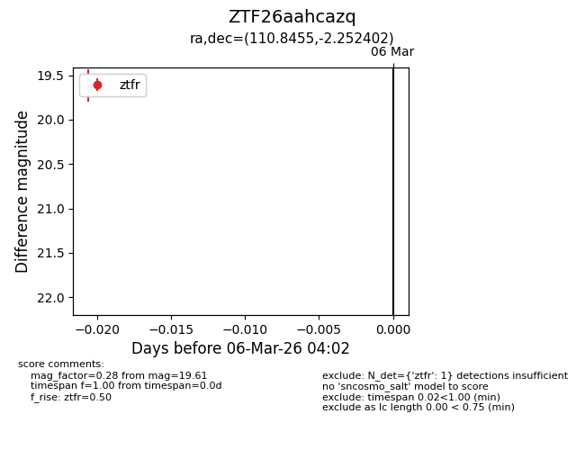
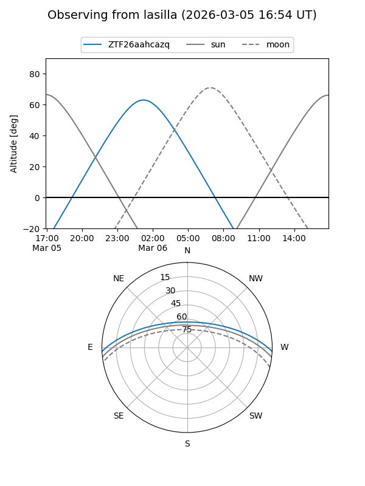
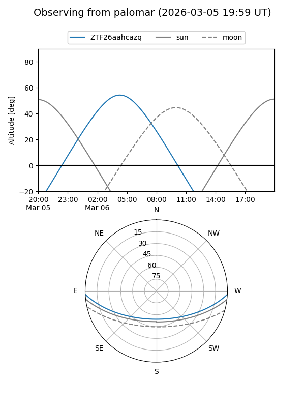

ZTF26aahcazq
Target ZTF26aahcazq at 2026-03-06 04:04
Aliases and brokers:
FINK: link
Lasair: link
ALeRCE: link
alt names
ZTF26aahcazq (ztf,fink_ztf)
Coordinates:
equatorial (ra, dec) = 110.8455,-2.25240
equatorial (HMS+DMS) = 07:23:22.93,-02:15:08.65
galactic (l, b) = (218.6039,+6.06356)
Flags:
Photometry:
last ztfr=19.61
1 ztfr detections
Lightcurve

Visibility


Additional plots